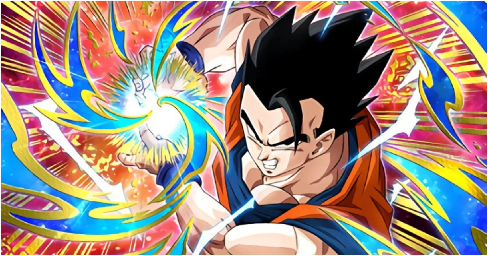

Who is Gohan
Son Gohan (孫そん悟ご飯はん Son Gohan) is a half-breed Saiyan and one of the most prominent characters in the Dragon Ball series. He is the elder son of the series' primary protagonist Goku and his wife Chi-Chi, the older brother of Goten, the husband of Videl and father to Pan. He is named after Goku's adoptive grandfather, Gohan.
Unlike his father, Gohan lacks a passion for fighting. Nevertheless, Gohan fights alongside the Dragon Team in the defense of Earth for much of his life.

Goku and his friends
Gohan's Characterstics
- He's super powerful
- CHi Chi treat his as kid
- He still fights for the earth
Gohan's Friends
Gohan has some powerful friends who are always on his journey to save the earth. CLick on the links below to read more about them: